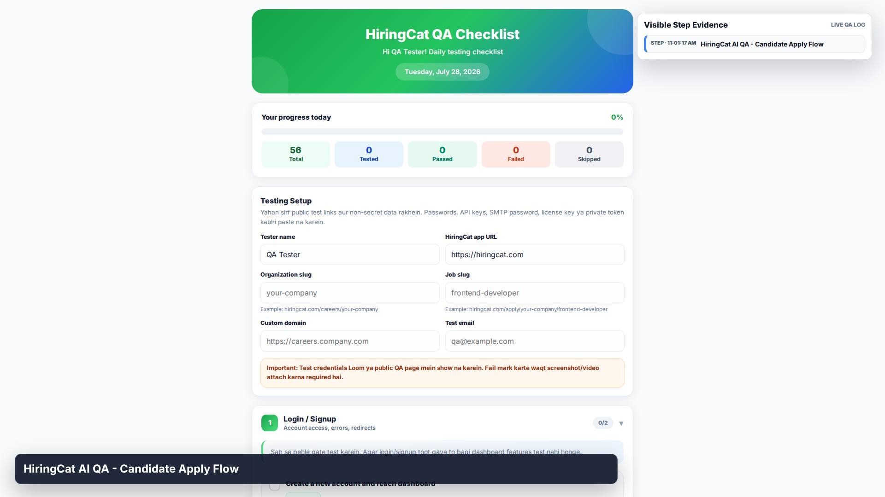
1. STEP
HiringCat AI QA - Candidate Apply Flow

HiringCat AI QA - Candidate Apply Flow
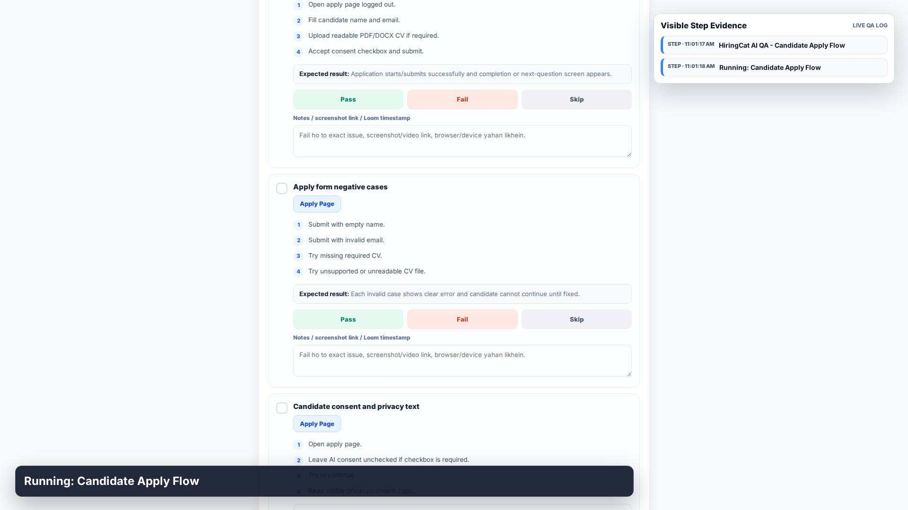
Running: Candidate Apply Flow
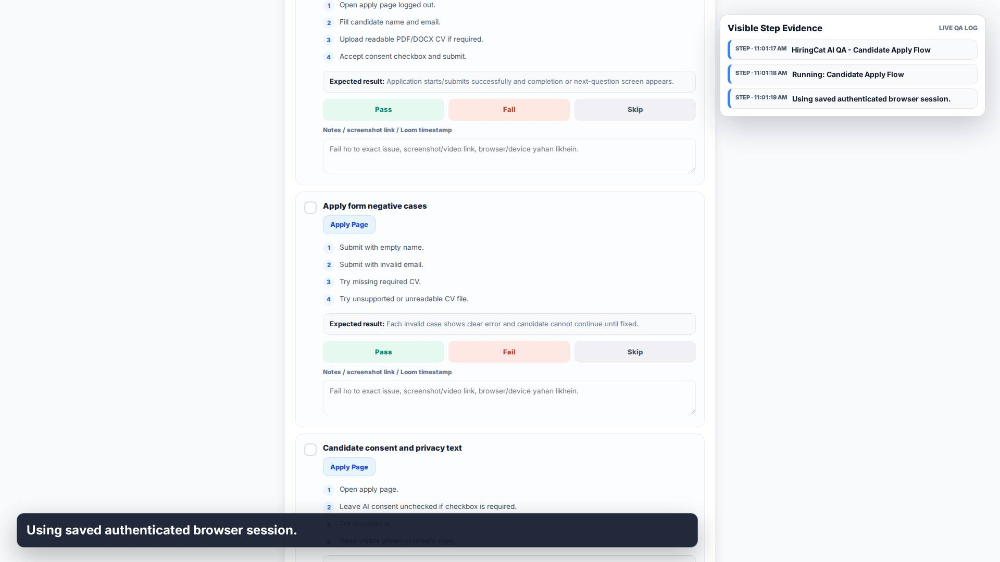
Using saved authenticated browser session.
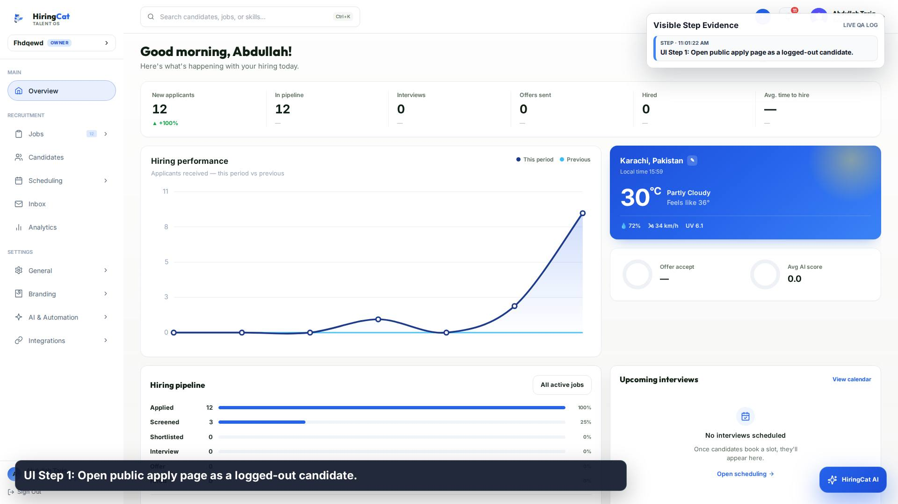
UI Step 1: Open public apply page as a logged-out candidate.
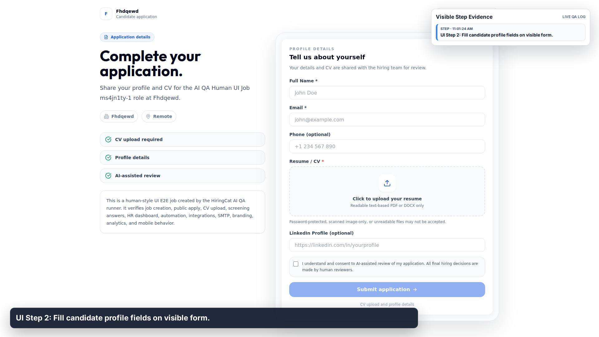
UI Step 2: Fill candidate profile fields on visible form.
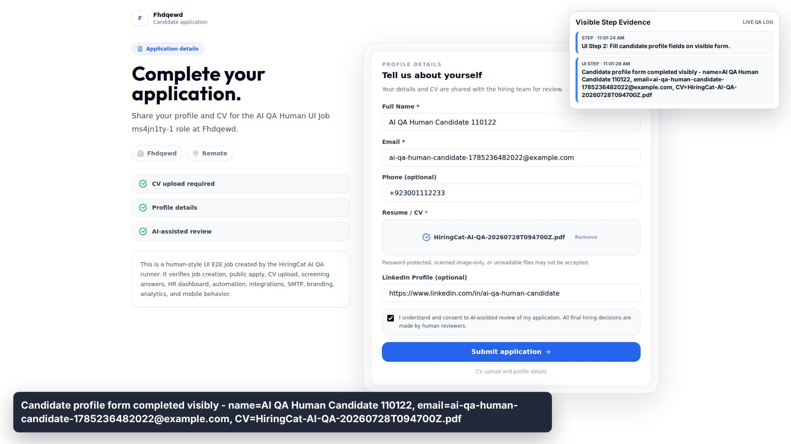
Candidate profile form completed visibly - name=AI QA Human Candidate 110122, email=ai-qa-human-candidate-1785236482022@example.com, CV=HiringCat-AI-QA-20260728T094700Z.pdf
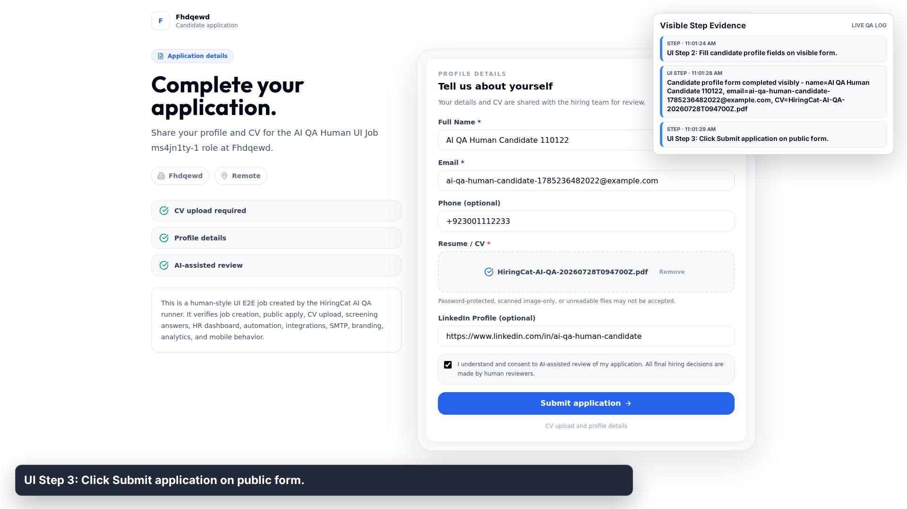
UI Step 3: Click Submit application on public form.
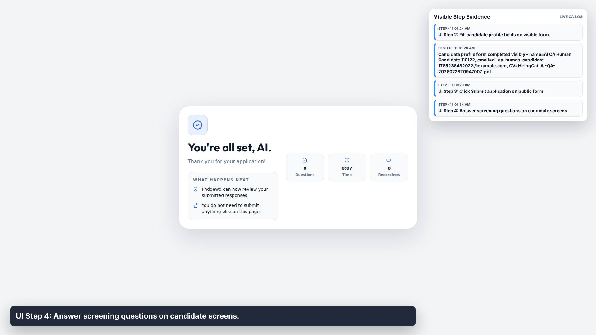
UI Step 4: Answer screening questions on candidate screens.
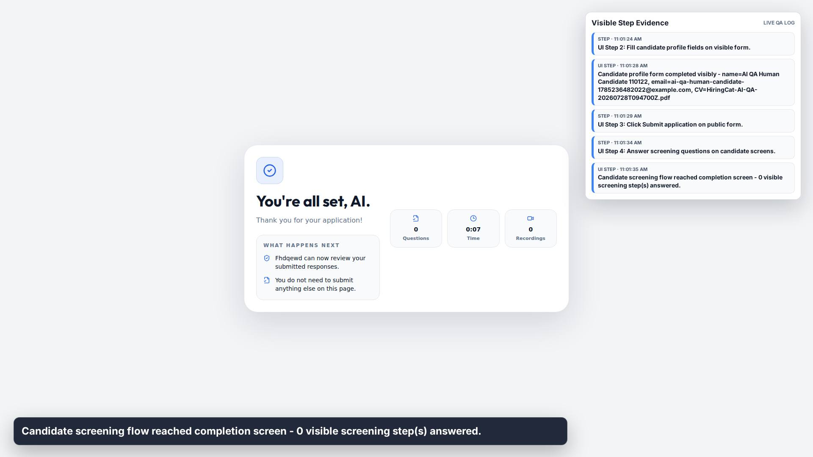
Candidate screening flow reached completion screen - 0 visible screening step(s) answered.
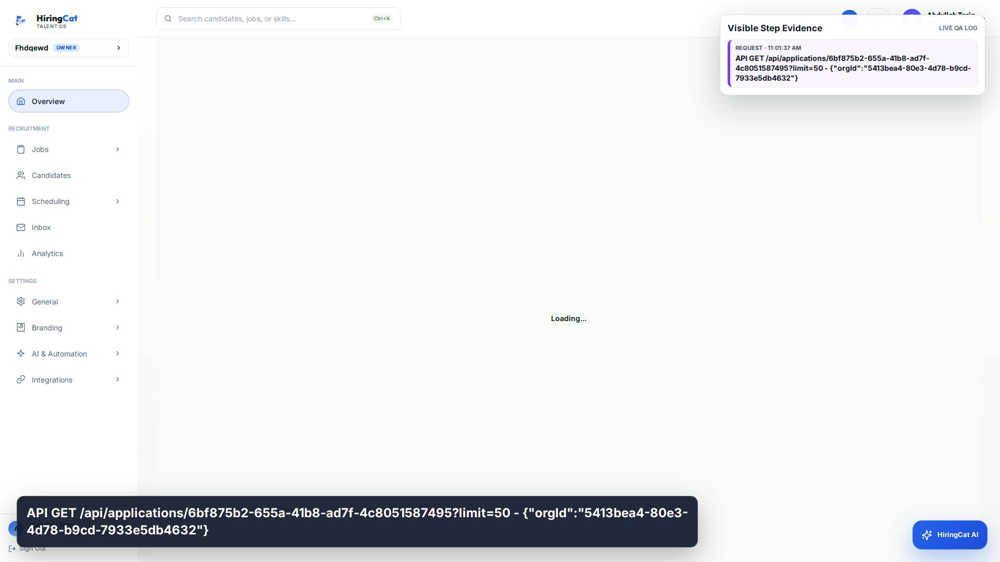
API GET /api/applications/6bf875b2-655a-41b8-ad7f-4c8051587495?limit=50 - {"orgId":"5413bea4-80e3-4d78-b9cd-7933e5db4632"}
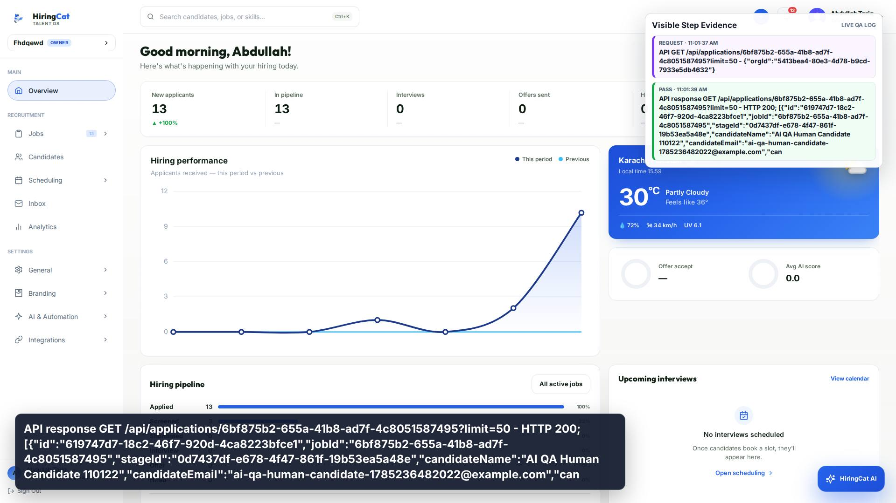
API response GET /api/applications/6bf875b2-655a-41b8-ad7f-4c8051587495?limit=50 - HTTP 200; [{"id":"619747d7-18c2-46f7-920d-4ca8223bfce1","jobId":"6bf875b2-655a-41b8-ad7f-4c8051587495","stageId":"0d7437df-e678-4f47-861f-19b53ea5a48e","candidateName":"AI QA Human Candidate 110122","candidateEmail":"ai-qa-human-candidate-1785236482022@example.com","can
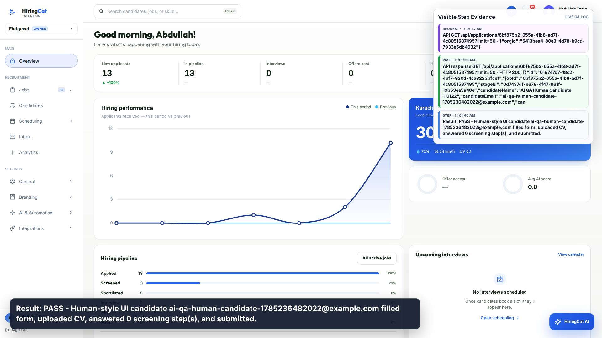
Result: PASS - Human-style UI candidate ai-qa-human-candidate-1785236482022@example.com filled form, uploaded CV, answered 0 screening step(s), and submitted.